한국사능력검정시험-심화 (2013-10-26 기출문제)
1. (가) 시대의 생활 모습으로 옳은 것은? [2점]
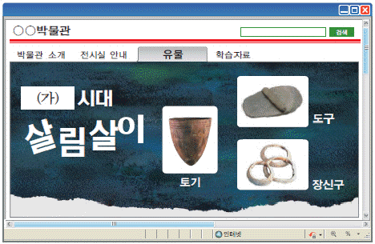
- 세형 동검을 제작하였다.
- 가락바퀴를 이용하여 실을 뽑았다.
- 사람이 죽으면 독에 넣어 매장하였다.
- 반량전 등의 중국 화폐를 사용하였다.
- 목책과 환호로 외부 침입에 대비하였다.
(정답률: 94%)

2. 밑줄 그은 (ㄱ)~(ㅁ)에 대한 설명으로 옳지 않은 것은? [2점]
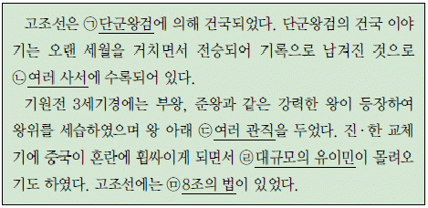
- (ㄱ) - 제사장이면서 정치적 지배자였다.
- (ㄴ) - 삼국유사, 제왕운기 등이 있다.
- (ㄷ) - 국상, 막리지 등이 있었다.
- (ㄹ) - 철기 문화를 보유하고 있었다.
- (ㅁ) - 사유 재산을 중시하는 조항이 있다.
(정답률: 75%)
3. 지도와 같은 변화의 원인으로 옳은 것은? [1점]
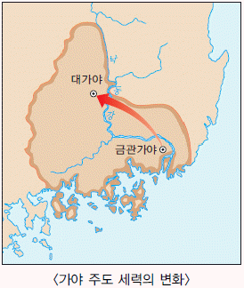
- 근초고왕이 마한을 정복하였다.
- 지증왕이 우산국을 복속하였다.
- 백제와 신라의 동맹이 강화되었다.
- 장수왕이 한강 유역까지 진출하였다.
- 광개토 대왕이 군대를 보내 신라를 구원하였다.
(정답률: 83%)
4. (가)에 들어갈 내용으로 적절하지 않은 것은? [2점]
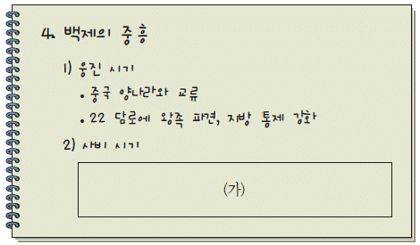
- 동진에서 불교 전래
- 한강 유역 일시 회복
- 국호를 남부여로 변경
- 중앙 관청을 22부로 정비
- 미륵사 등 대규모 사찰 건립
(정답률: 67%)
5. (가)에 대한 설명으로 옳지 않은 것은? [1점]
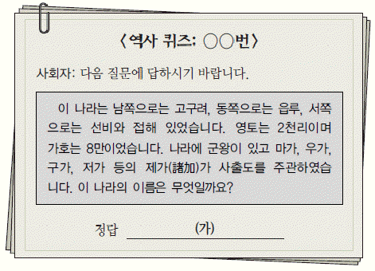
- 순장의 풍습이 있었다.
- 영고라는 제천 행사가 있었다.
- 혼인 풍습으로 민며느리제가 있었다.
- 흉년이 들면 왕에게 책임을 묻기도 하였다.
- 도둑질한 자에게는 12배를 배상하게 하였다.
(정답률: 74%)
6. (가)~(라)의 문화 전파 내용으로 옳은 것을 <보기>에서 고른 것은? [2점]
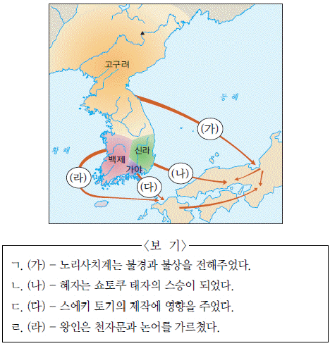
- ㄱ, ㄴ
- ㄱ, ㄷ
- ㄴ, ㄷ
- ㄴ, ㄹ
- ㄷ, ㄹ
(정답률: 57%)
7. 밑줄 그은‘황상’에 대한 설명으로 옳은 것은? [3점]
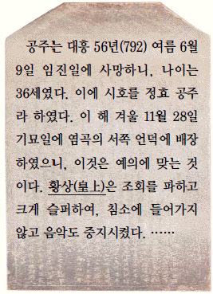
- 당, 신라와 적대 관계를 유지하였다.
- 해동성국이라 불릴 정도로 나라를 발전시켰다.
- 장문휴로 하여금 산둥 반도를 공격하게 하였다.
- 수도를 중경 현덕부에서 상경 용천부로 옮겼다.
- 고구려 유민을 이끌고 동모산에서 나라를 세웠다.
(정답률: 64%)
8. 밑줄 그은 (ㄱ)~(ㅁ) 중 옳지 않은 것은? [2점]
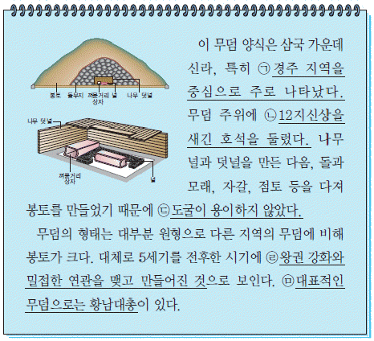
- (ㄱ)
- (ㄴ)
- (ㄷ)
- (ㄹ)
- (ㅁ)
(정답률: 56%)
9. 밑줄 그은‘이날’과 관련된 속담으로 적절한 것은? [1점]
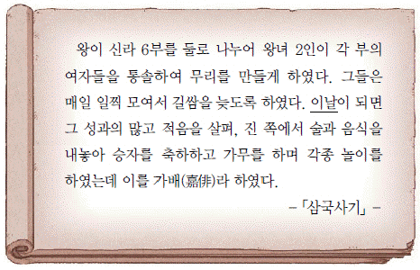
- 2월 바람에 김칫독 깨진다.
- 우수 경칩에 대동강 물이 풀린다.
- 단오물은 정승하기보다 더 어렵다.
- 청명에는 부지깽이를 거꾸로 꽂아 놓아도 산다.
- 가을 맛은 송편에서 오고 송편 맛은 솔내에서 온다.
(정답률: 41%)
10. 다음 책의 훼손된 부분에 들어있는 사실로 옳은 것은? [3점]
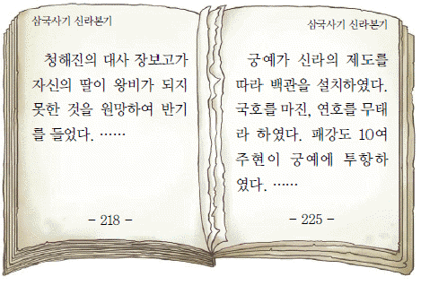
- 국학이 설립되었다.
- 김헌창의 난이 일어났다.
- 관료전이 지급되고 녹읍이 폐지되었다.
- 왕건이 신하들의 추대로 왕위에 올랐다.
- 견훤이 완산주에 도읍하고 후백제를 세웠다.
(정답률: 79%)
11. (가) 군사 조직에 대한 설명으로 옳은 것은? [2점]
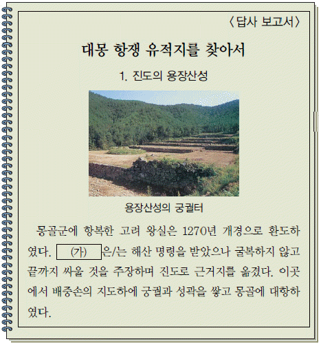
- 국경 지대인 양계에 처음 설치되었다.
- 유사시에 향토 방위를 맡는 예비군이었다.
- 포수, 사수, 살수의 삼수병으로 편제되었다.
- 최씨 무신정권의 군사적 기반 역할을 하였다.
- 병농일치의 부대로 군인전이 지급되지 않았다.
(정답률: 80%)
12. 다음 상황이 나타난 시기의 사회 모습으로 옳은 것은? [2점]
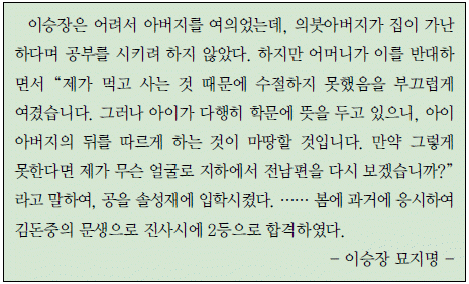
- 재산 상속에서 큰아들이 우대받았다.
- 문중을 중심으로 서원과 사우가 세워졌다.
- 사위와 외손자에게도 음서의 혜택이 주어졌다.
- 대를 잇기 위해 양자를 들이는 일이 일반화되었다.
- 혼인 후에 곧바로 남자 집에서 생활하는 경우가 보편화되었다.
(정답률: 70%)
13. 다음 전시회에 전시될 문화유산으로 적절한 것을 <보기>에서 고른 것은? [3점]
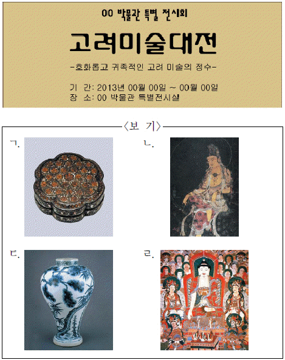
- ㄱ, ㄴ
- ㄱ, ㄷ
- ㄴ, ㄷ
- ㄴ, ㄹ
- ㄷ, ㄹ
(정답률: 39%)
14. 밑줄 그은‘왕’의 업적으로 옳은 것은? [2점]
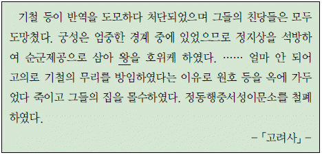
- 과전법을 시행하였다.
- 과거제를 도입하였다.
- 정계와 계백료서를 지었다.
- 전민변정도감을 설치하였다.
- 12목에 지방관을 파견하였다.
(정답률: 83%)
15. (가) 제도에 대한 설명으로 옳지 않은 것은? [2점]
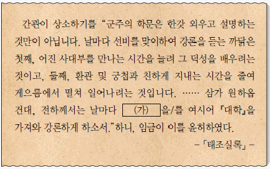
- 고려 때 처음 시행되었다.
- 승정원의 주관으로 운영되었다.
- 연산군 때 일시적으로 중단되기도 하였다.
- 유교의 경전과 역사서가 교재로 사용되었다.
- 왕과 신하가 함께 학문과 정책을 토론하였다
(정답률: 57%)
16. 밑줄 그은‘대장’에 대한 설명으로 옳은 것을 <보기>에서 고른 것은? [2점]
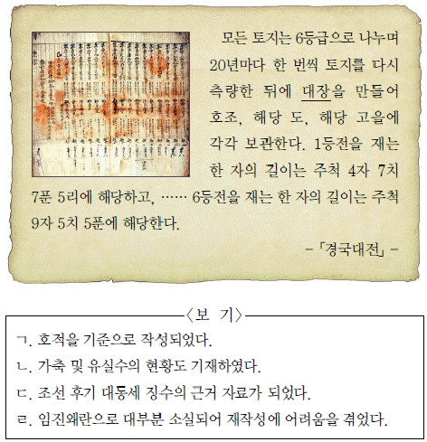
- ㄱ, ㄴ
- ㄱ, ㄷ
- ㄴ, ㄷ
- ㄴ, ㄹ
- ㄷ, ㄹ
(정답률: 40%)
17. (가)에 대한 설명으로 옳은 것은? [2점]
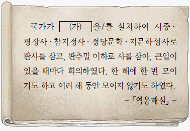
- 6부를 통해 행정 실무를 맡아보았다.
- 국방과 군사 문제를 주로 논의하였다.
- 화폐와 곡식의 출납에 대한 회계를 전담하였다.
- 관원은 중서문하성의 낭사와 함께 대간으로 불렸다.
- 관리를 임명할 때 심사하여 동의하는 권한이 있었다.
(정답률: 51%)
18. 밑줄 그은 (ㄱ)의 근거를 찾기 위한 탐구 활동으로 적절한 것을 <보기>에서 고른 것은? [3점]
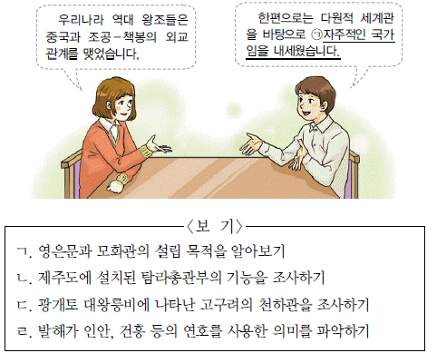
- ㄱ, ㄴ
- ㄱ, ㄷ
- ㄴ, ㄷ
- ㄴ, ㄹ
- ㄷ, ㄹ
(정답률: 82%)
19. 밑줄 그은‘왕’의 업적으로 옳은 것을 <보기>에서 고른 것은? [2점]
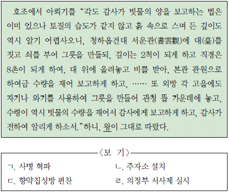
- ㄱ, ㄴ
- ㄱ, ㄷ
- ㄴ, ㄷ
- ㄴ, ㄹ
- ㄷ, ㄹ
(정답률: 66%)
20. (가) 지역에 대한 설명으로 옳지 않은 것은? [2점]
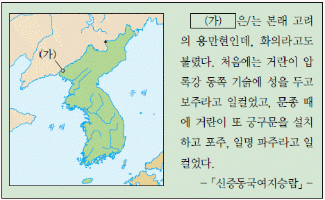
- 서희의 활약으로 고려의 영토가 되었다.
- 고려 말 이성계가 명을 공격하기 위해 군대를 주둔시켰다.
- 세종 때 김종서가 여진을 몰아내고 6진을 개척하였다.
- 임진왜란 당시 일본군을 피해 선조가 피난한 곳이다.
- 조선 후기에 만상이 청과의 무역을 활발히 펼쳤다.
(정답률: 51%)
21. (가)에 대한 설명으로 옳은 것은? [2점]
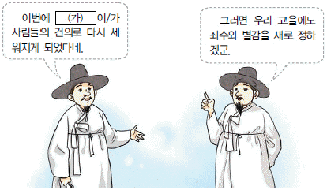
- 향리의 비리를 감찰하였다.
- 고려 태조 때 처음으로 설치되었다.
- 빈민 구제를 주요 목적으로 삼았다.
- 호장, 부호장 등이 행정 실무를 담당하였다.
- 지방의 행정∙사법∙군사권을 가지고 있었다.
(정답률: 54%)
22. 다음 시기 (가), (나) 신분에 대한 설명으로 옳은 것을 <보기>에서 고른 것은? [1점]
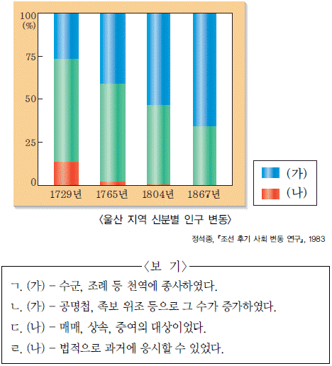
- ㄱ, ㄴ
- ㄱ, ㄷ
- ㄴ, ㄷ
- ㄴ, ㄹ
- ㄷ, ㄹ
(정답률: 75%)
23. 지도의 전쟁에 대한 탐구 활동으로 적절한 것은? [2점]
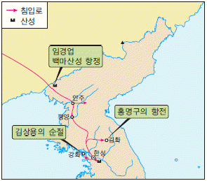
- 삼전도비의 건립 배경을 알아본다.
- 개경의 나성 축조 과정을 조사한다.
- 요동 정벌의 추진 배경을 파악한다.
- 팔만대장경이 간행된 목적을 찾아본다.
- 경복궁의 소실과 중건 과정을 살펴본다.
(정답률: 56%)
24. 다음과 같은 기관에 대한 설명으로 옳지 않은 것은? [2점]
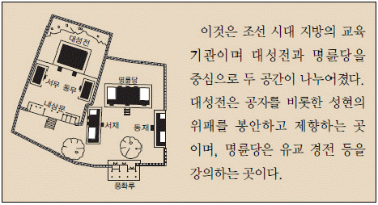
- 평민층의 자제도 입학할 수 있었다.
- 흥선 대원군에 의해 대부분 철폐되었다.
- 전국의 부∙목∙군∙현에 하나씩 설립되었다.
- 중앙에서 교수와 훈도를 파견하기도 하였다.
- 고을의 크기에 따라 학생 정원의 차이가 있었다.
(정답률: 55%)
25. (가), (나)에 대한 설명으로 옳은 것은? [3점]
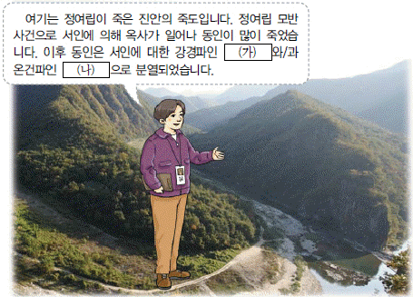
- (가) - 경종의 즉위를 적극 후원하였다.
- (가) - 광해군 시기에 국정을 주도하였다.
- (나) - 이이와 성혼의 학문을 계승하였다.
- (나) - 경신환국으로 정치적 주도권을 장악하였다.
- (가), (나) - 2차에 걸쳐 예송 논쟁을 벌였다.
(정답률: 60%)
26. 다음과 같은 규약을 가진 향촌 조직에 대한 설명으로 옳지 않은 것은? [1점]
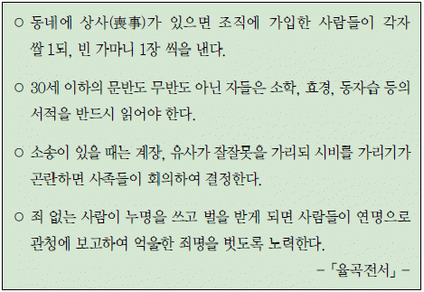
- 이황 등에 의해서 보급되었다.
- 매향을 통해 평안을 기원하였다.
- 사림의 농민 지배를 강화시켰다.
- 상호 부조와 유교 윤리를 실천하였다.
- 조광조가 널리 시행하기 위하여 노력하였다.
(정답률: 38%)
27. 다음 자료를 통해 알 수 있는 시기의 경제 상황으로 옳지 않은 것은? [3점]
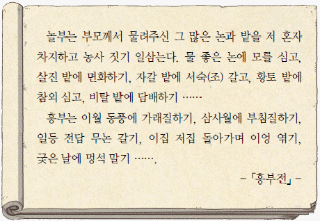
- 전국적으로 장시가 널리 확산되었다.
- 광작과 상품 작물의 재배가 확대되었다.
- 상업 장려를 위해 관영 상점이 개설되었다.
- 전문적으로 광산을 경영하는 덕대가 출현하였다.
- 정률 지대에서 정액 지대로 바뀌는 현상이 나타났다.
(정답률: 51%)
28. 다음 주장을 펼친 인물의 활동으로 옳은 것은? [2점]
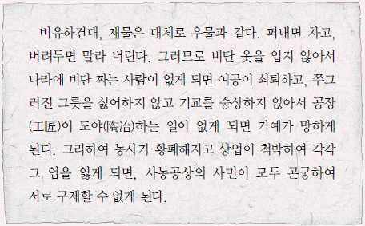
- 100리척을 사용하여 동국지도를 제작하였다.
- 지봉유설에서 천주실의를 조선에 소개하였다.
- 열하일기에서 화폐 유통의 필요성을 역설하였다.
- 역대 문물을 정리한 동국문헌비고를 편찬하였다.
- 청의 문물 수용을 강조하는 북학의를 저술하였다.
(정답률: 62%)
29. 밑줄 그은‘요즘’에 볼 수 있는 모습으로 적절하지 않은 것은? [2점]
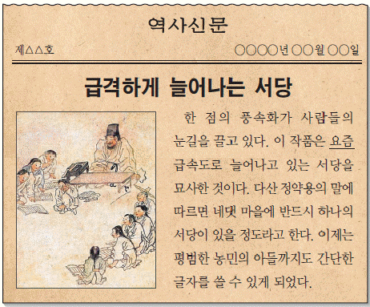
- 포구에서 영업하는 객주
- 한글 소설을 읽고 있는 부인
- 법주사 팔상전 앞을 거닐고 있는 승려
- 수조권자인 관리에게 전조를 바치는 농민
- 호랑이를 소재로 하여 민화를 그리는 화가
(정답률: 60%)
30. (가), (나) 국가에 대한 설명으로 옳은 것을 보기에서 고른 것은? [2점]
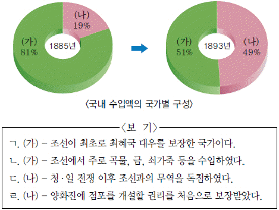
- ㄱ, ㄴ
- ㄱ, ㄷ
- ㄴ, ㄷ
- ㄴ, ㄹ
- ㄷ, ㄹ
(정답률: 34%)
31. 자료와 관련된 정책에 대한 설명으로 옳지 않은 것은? [2점]
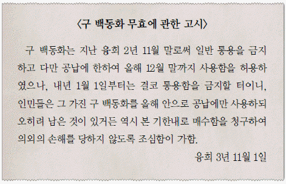
- 전환국 설치의 계기가 되었다.
- 탁지부에서 정책을 집행하였다.
- 시행 직후 통화량이 급감하였다.
- 재정 고문 메가타의 주도로 시행되었다.
- 한국인 상인과 회사에 큰 타격을 주었다.
(정답률: 51%)
32. 자료는 어느 신문의 창간사이다. 이 신문에 대한 설명으로 옳은 것은? [1점]
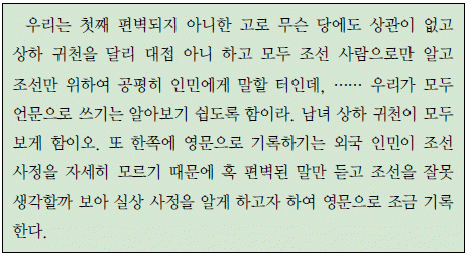
- 천도교에서 발행하였다.
- 열흘에 한 번씩 발행되었다.
- 신문지법에 의해 탄압을 받았다.
- 우리나라 최초의 민간 신문이었다.
- 장지연의 시일야방성대곡을 게재하였다.
(정답률: 52%)
33. 다음은 어느 외국인의 가상 회고록이다. 밑줄 그은‘건축물’로 적절하지 않은 것은? [3점]
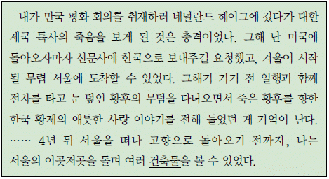
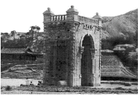
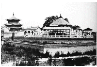
(정답률: 38%)
34. 다음 자료와 관련된 민족 운동에 대한 설명으로 옳은 것은? [2점]
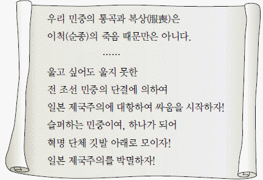
- 평양에서 시작되어 전국으로 확산되었다.
- 대한민국 임시 정부 수립의 계기가 되었다.
- 일제가 치안 유지법을 적용하여 탄압하였다.
- 대한매일신보 등 당시 언론이 적극 후원하였다.
- 한국인 학생과 일본인 학생 사이의 충돌에서 비롯되었다.
(정답률: 50%)
35. (가)를 처음 실시한 왕의 업적으로 옳은 것은? [2점]
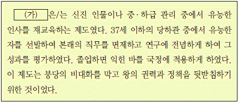
- 칠정산 내∙외편을 편찬하였다.
- 속대전을 편찬하고 서원을 정리하였다.
- 어영청을 설치하여 군비를 강화하였다.
- 통공 정책으로 시전 상인들의 특권을 축소하였다.
- 대동법 시행을 확대하여 농민들의 부담을 줄였다.
(정답률: 60%)
36. (가), (나) 시기 사이에 있었던 일을 <보기>에서 고른 것은? [2점]
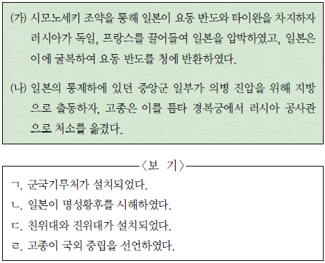
- ㄱ, ㄴ
- ㄱ, ㄷ
- ㄴ, ㄷ
- ㄴ, ㄹ
- ㄷ, ㄹ
(정답률: 42%)
37. 밑줄 그은‘이 부대’에 대한 설명으로 옳은 것은? [3점]
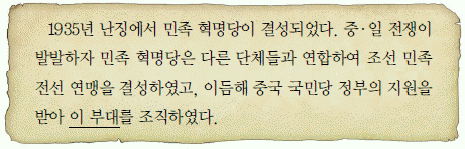
- 양세봉의 지휘 아래 활동하였다.
- 영릉가 전투에서 일본군을 물리쳤다.
- 일본군의 공세를 피해 자유시로 이동하였다.
- 중국 관내에서 결성된 최초의 한인 무장 부대였다.
- 중국 호로군과 함께 한∙중 연합 작전을 전개하였다.
(정답률: 58%)
38. 다음 시에 나타난 폐단을 시정하기 위해 흥선 대원군이 실시한 정책으로 옳은 것은? [1점]
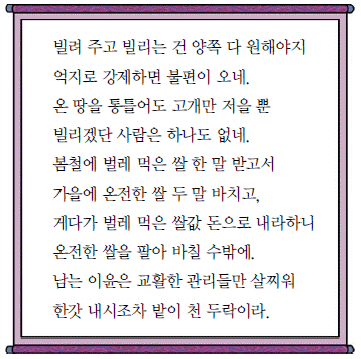
- 사창제를 시행하였다.
- 호포제를 시행하였다.
- 만동묘를 철폐하였다.
- 당백전을 발행하였다.
- 양전 사업을 실시하였다.
(정답률: 62%)
39. (가)~(다)의 주장들을 제기된 순서대로 옳게 나열한 것은? [3점]
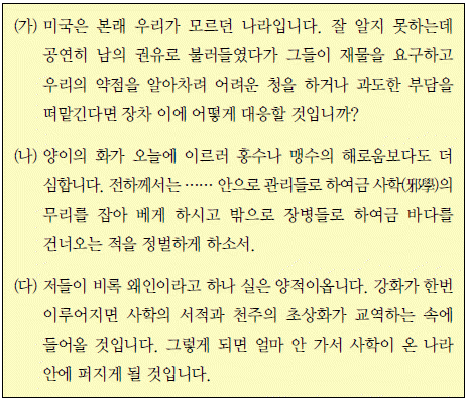
- (가) - (나) - (다)
- (가) - (다) - (나)
- (나) - (가) - (다)
- (나) - (다) - (가)
- (다) - (나) - (가)
(정답률: 50%)
40. 다음과 같은 주장이 끼친 영향으로 가장 적절한 것은? [2점]
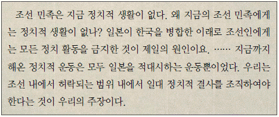
- 신간회를 해소하는 투쟁이 전개되었다.
- 국외 독립운동 기지 건설이 시작되었다.
- 대한민국 임시 정부가 구미위원부를 설치하였다.
- 자치론이 확산되어 민족주의 계열이 분화되었다.
- 조선 노동 총동맹이 결성되면서 노동 운동이 활발해졌다.
(정답률: 49%)
41. 밑줄 그은‘이 시기’의 문화계 동향으로 가장 적절한 것은? [1점]
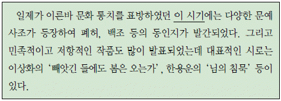
- 윤동주의 서시가 발표되었다.
- 원각사에서 은세계가 공연되었다.
- 이광수가 매일신보에 무정을 연재하였다.
- 최남선이 해에게서 소년에게를 발표하였다.
- 신경향파 작가들이 카프(KAPF)를 결성하였다.
(정답률: 49%)
42. 밑줄 그은‘성명’에 대한 설명으로 옳은 것은? [2점]
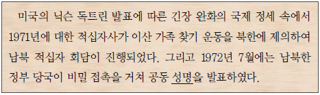
- 한반도 비핵화에 합의하였다.
- 금강산 관광을 시작하기로 하였다.
- 남북한 유엔 동시 가입을 협의하였다.
- 개성 공단 조성 사업을 추진하기로 하였다.
- 자주, 평화, 민족 대단결의 통일 원칙을 마련하였다.
(정답률: 70%)
43. (가)에 들어갈 내용으로 옳은 것을 <보기>에서 고른 것은? [2점]
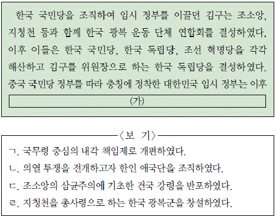
- ㄱ, ㄴ
- ㄱ, ㄷ
- ㄴ, ㄷ
- ㄴ, ㄹ
- ㄷ, ㄹ
(정답률: 54%)
44. 다음 자료에 대한 탐구 활동으로 가장 적절한 것은? [1점]
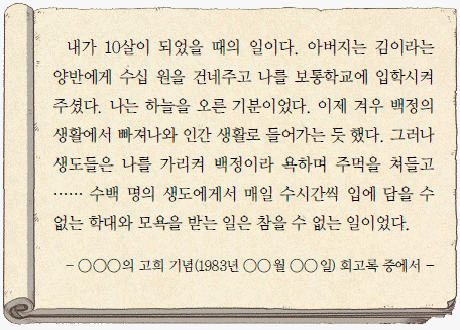
- 형평 운동의 배경을 알아본다.
- 교육 입국 조서의 내용을 파악한다.
- 신흥 무관 학교의 교육 내용을 분석한다.
- 민립 대학 설립 운동의 전개과정을 알아본다.
- 언론 기관의 문맹 퇴치 운동 지원 활동을 조사한다.
(정답률: 79%)
45. (가) 인물의 활동으로 옳지 않은 것은? [2점]
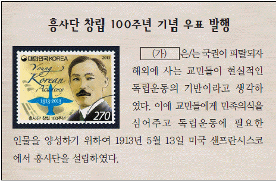
- 실력 양성론을 주장하였다.
- 양기탁 등과 함께 신민회를 조직하였다.
- 대성 학교를 설립하여 민족 교육을 실시하였다.
- 한국 독립 유일당 북경 촉성회 선언을 발표하였다.
- 국민 대표 회의에서 새로운 정부 수립을 주장하였다.
(정답률: 41%)
46. (가), (나) 장면이 있었던 시기 사이의 사실로 옳은 것은? [2점]
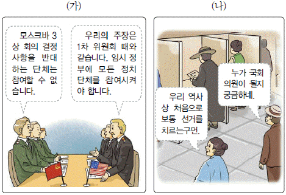
- 반민족 행위 처벌법이 제정되었다.
- 조선 건국 준비 위원회가 결성되었다.
- 김구 등이 남북 지도자 회의에 참석하였다.
- 여운형 등이 좌우 합작 위원회를 구성하였다.
- 이승만이 정읍에서 단독 정부 수립을 주장하였다.
(정답률: 42%)
47. (가), (나) 헌법에 대한 설명으로 옳은 것을 <보기>에서 고른 것은? [3점]
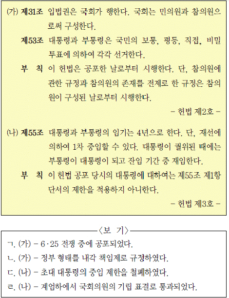
- ㄱ, ㄴ
- ㄱ, ㄷ
- ㄴ, ㄷ
- ㄴ, ㄹ
- ㄷ, ㄹ
(정답률: 35%)
48. 다음 취임사와 함께 출범한 정부 시기의 사실로 옳은 것은? [1점]
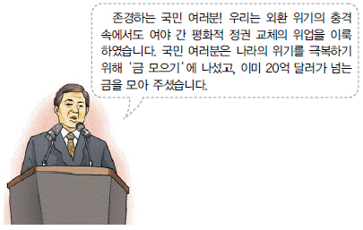
- 금융 실명제가 시작되었다.
- 야간 통행 금지가 해제되었다.
- 지방 자치제가 최초로 시행되었다.
- 남북 정상 회담이 최초로 개최되었다.
- 3당 합당을 통해 여소야대를 극복하려 하였다.
(정답률: 67%)
49. 그래프에 나타난 시기의 경제 상황으로 옳지 않은 것은? [2점]
- 저곡가 정책이 추진되었다.
- 서독에 광부와 간호사가 파견되었다.
- 건설업의 중동 진출이 본격화되었다.
- 한국 경제의 대외 의존도가 심화되었다.
- 경공업 제품을 중심으로 수출이 증가하였다.
(정답률: 35%)
50. 다음 선언문이 발표된 사건에서 제기된 구호로 옳은 것은? [2점]
- 부정 선거 책임자를 즉시 처벌하라!
- 명분 없는 계엄령을 즉각 철폐하라!
- 사죄와 배상 없는 경제 협력 웬말이냐!
- 국민 합의 배신하는 호헌 주장 철회하라!
- 긴급 조치 철폐하고 민주 인사 석방하라!
(정답률: 58%)